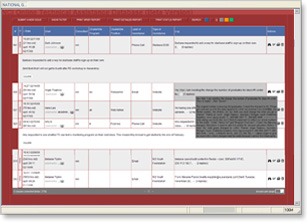
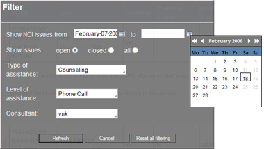
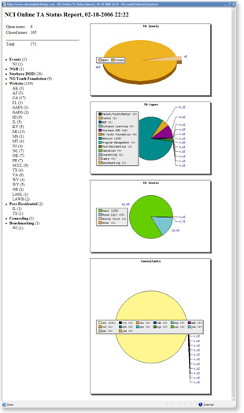
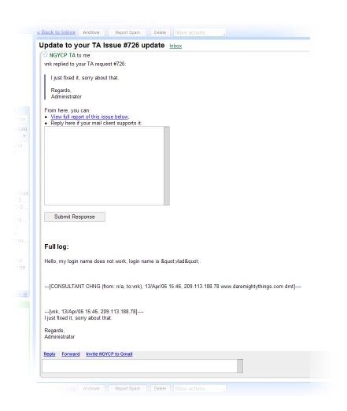

NCI Online Technical Assistance Database is a web-based solution for tracking, reporting and streamlining technical assistance requests within the organization. Developed for specific use for non-profit Gov't contractor. This easily scalable, adjustable, and reusable application works on PHP server-side scripting using MySQL database. JavaScript client-side scripting helps make this easy to use web-application a serious competitor to an older style desktop-based applications.

Table style layout gives consultant an easy outlook on a current status of project's TA requests.

Powerful filter allows consultant or supervisor filter TA requests by type, status, level, consultant assigned as well as select a date range display restriction.

Status report doesn't only show a quick and categorized overview of issues for the selected date range, but also gives on-the-fly generated graphs for quick analysis.

Don't like default color scheme? No problem. You can easily switch to a diffent color scheme.

If allowed by consultant, client will receive an email alert when issue is updated. In that alert, client will be able to respond to consultant right from the email message. That will keep a communication log in the database.